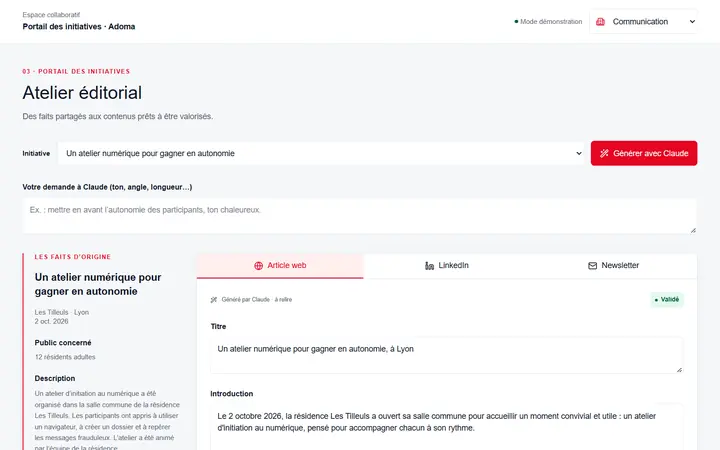
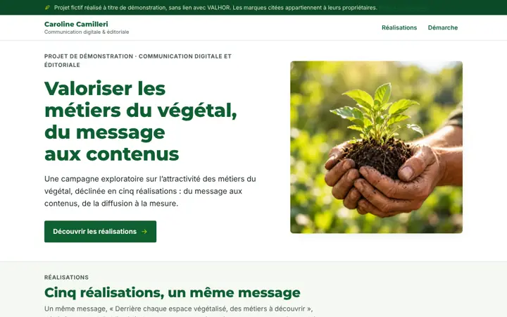
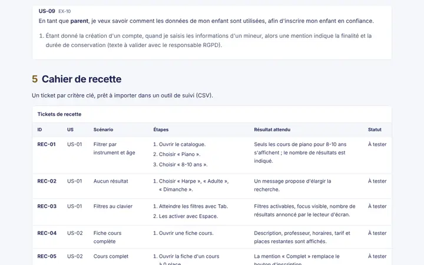

Projets
Études exploratoires réalisées en autonomie : aucune commande client, données fictives.
-

Énergies B2B : gestion de flotte
Une alerte expliquée par l'IA, une décision prise par l'humain.
-

Épargne salariale : 4 supports B2B
Un message réglementaire, quatre publics.
-

-

Résidences : portail éditorial
Des initiatives locales aux contenus diffusés.
-

Végétal : campagne sur trois métiers
Un message, cinq contenus : LinkedIn, newsletter, vidéo, article, diffusion.
-

Cahier des charges → tickets de recette
Analyse, user stories, recette : testable en direct.
Ma méthode avec l'IA
- Contexte : brief, cible, design system, interdits.
- Génération : des demandes précises, un sujet à la fois.
- Vérification : mobile, clavier, contrastes, exactitude.
- Livraison : en ligne, versionnée, prête pour un atelier.